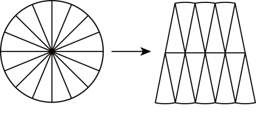
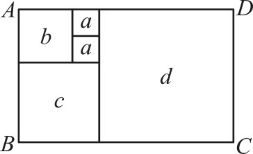
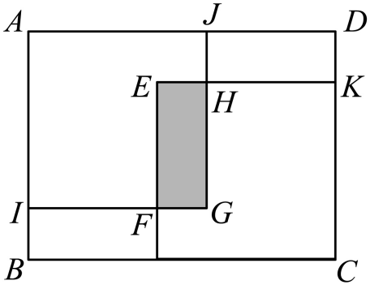

专题03 一元一次方程的构造（举一反三专项训练）
【北师大版2024】

【题型1 根据一元一次方程的定义构造】 1
【题型2 根据同类项的概念构造】 2
【题型3 根据相反数、倒数的性质构造】 4
【题型4 根据一元一次方程解的定义构造】 6
【题型5 根据一元一次方程解的情况构造】 8
【题型6 巧设辅助未知数构造】 10
【题型7 根据图形之间的等量关系构造】 12
【题型8 根据新定义构造】 15

【题型1 根据一元一次方程的定义构造】
【例1】（24-25七年级上·湖南株洲·期末）方程a+2x2+5xm−3−2=3是一元一次方程，则am的值为（ ）
A．8 B．−8 C．−16 D．16
【答案】D
【分析】根据一元一次方程的定义得到a+2=0，m−3=1，求解可得答案．
本题考查了一元一次方程的定义，含有一个未知数且未知数的次数是一次的方程是一元一次方程．
【详解】解：∵a+2x2+5xm−3−2=3是关于x的一元一次方程，
∴a+2=0，m−3=1，
∴a=−2，m=4，
∴am=(−2)4=16．
故选：D．
【变式1-1】（24-25七年级下·吉林长春·期末）已知xk−2+3=5是关于x的一元一次方程，则k= ．
【答案】3
【分析】本题考查了一元一次方程的定义，熟练掌握一元一次方程的定义“只含有一个未知数，未知数的次数都是1，等号两边都是整式的方程叫做一元一次方程”是解题的关键．根据一元一次方程的定义即可求解．
【详解】解：∵xk−2+3=5是关于x的一元一次方程，
∴k−2=1，
解得：k=3．
故答案为：3．
【变式1-2】若(m+5)x2+6mx+4m=0是关于x的一元一次方程，则m= ．
【答案】−5
【分析】本题考查了一元一次方程的定义，熟知定义是解本题的关键．根据一元一次方程的概念：只含有一个未知数、未知数的最高次数为1且两边都为整式的等式，据此解答即可．
【详解】解：∵(m+5)x2+6mx+4m=0是关于x的一元一次方程，
∴m+5=0且6m≠0，
∴m=−5，
故答案为：−5 ．
【变式1-3】关于x的方程(k−2)x2+(k−2)x=1是一元一次方程，方程的解为 ．
【答案】 x=−14
【分析】本题考查一元一次方程的定义，绝对值，解一元一次方程，掌握知识点是解题的关键．
先推导出k−2=0,k−2≠0，解得k=−2，将k=−2代入(k−2)x2+(k−2)x=1，得到−4x=1，求出x的值即可．
【详解】解：∵关于x的方程(k−2)x2+(k−2)x=1是一元一次方程，
∴k−2=0,且k−2≠0，
解得k=±2,且k≠2，
∴k=−2，
将k=−2代入(k−2)x2+(k−2)x=1，得
−4x=1，
解得x=−14．
故答案为：x=−14．
【题型2 根据同类项的概念构造】
【例2】（24-25七年级上·陕西渭南·期末）若单项式−xyb+1与12xa−2y3是同类项，则(a−b)3的值为（ ）
A．1 B．0 C．−1 D．−27
【答案】A
【分析】本题考查同类项的定义，代数式求值一元一次方程，熟记同类项的定义求出a、b的值是解题的关键．
根据同类项的定义：字母相同，相同字母的指数也相同，求出a、b的值，然后代入，利用乘方的运算法则，即可求解．
【详解】解：∵单项式−xyb+1与12xa−2y3是同类项，
∴a−2=1，b+1=3，
解得：a=3，b=2，
∴将a=3，b=2，代入(a−b)3得
(a−b)3=(3−2)3=1．
故选：A．
【变式2-1】（24-25七年级上·全国·期末）若单项式−12x2m−1y的次数是4，则m的值是（ ）
A．32 B．12 C．3 D．2
【答案】D
【分析】本题考查单项式的次数，一元一次方程，掌握知识点是解题的关键．
根据题意，得到2m−1+1=4，求解即可．
【详解】解：∵单项式−12x2m−1y的次数是4，
∴2m−1+1=4，
解得m=2．
故选D．
【变式2-2】（24-25七年级上·河南驻马店·期末）多项式x2−3mxy−6y2+12xy合并同类项后不含xy项，则m= ．
【答案】4
【分析】本题考查整式加减中的无关型问题，解题的关键是掌握合并同类项法则．
合并同类项后不含xy项，则合并后xy项的系数为0，由此可解．
【详解】解：x2−3mxy−6y2+12xy
=x2+12−3mxy−6y2，
∵合并同类项后不含xy项，
∴12−3m=0，
解得：m=4，
故答案为：4．
【变式2-3】（24-25七年级上·全国·期末）若单项式13am+1b与−2a3bn的和仍是单项式，则方程x−7n−1+xm=1的解为 ．
【答案】x=17
【分析】本题考查了解一元一次方程，以及同类项的定义，熟练掌握解方程的步骤是解本题的关键．同类项定义中的两个“相同”：所含字母相同；相同字母的指数相同，是易混点，还要注意同类项定义中隐含的两个“无关”：①与字母的顺序无关；②与系数无关．由题意得到两单项式为同类项，利用同类项定义确定出m与n的值，代入方程计算即可求出解．
【详解】解：∵单项式13am+1b与−2a3bn的和仍是单项式，
∴m+1=3,n=1，
∴m=2,n=1，
代入方程得：x−71−1+x2=1，
解得：x=17．
故答案为：x=17．
【题型3 根据相反数、倒数的性质构造】
【例3】当x取何值时，代数式1−x2与6−x4的值互为相反数（ ）
A．103 B．−103 C．5 D．-5
【答案】A
【分析】本题考查相反数的定义以及解方程，根据相反数的定义，两个代数式之和为0．列出方程后，通过去分母、移项、合并同类项等步骤求解．
【详解】解：∵代数式1−x2与6−x4互为相反数，
∴ 1−x2+6−x4=0，解得x=103．
故选：A．
【变式3-1】（24-25七年级上·福建龙岩·期末）若式子6x−2的值与14互为倒数，则x的值为（ ）
A．−1 B．1 C．13 D．−13
【答案】B
【分析】本题考查了倒数的定义和解一元一次方程，熟知倒数的定义是解题的关键．利用互为倒数的两数之积为1列出方程，求出方程的解即可得到x的值．
【详解】解：∵式子6x−2的值与14互为倒数，
∴14×6x−2=1，
32x−12=1，
32x=32，
x=1，
故选：B．
【变式3-2】已知1−x的绝对值是2，y−2与13互为倒数，则x−y的值为（ ）
A．−6 B．2 C．−6或−2 D．2或−2
【答案】C
【分析】本题主要考查了解一元一次方程，倒数和绝对值的定义，代数式求值，根据绝对值的定义得到1−x=2，解方程可得x=−1或x=3；根据倒数的定义可得y−2=3，解得y=5，据此代值计算即可．
【详解】解；∵1−x的绝对值是2，
∴1−x=2，
∴1−x=2或1−x=−2，
∴x=−1或x=3；
∵y−2与13互为倒数，
∴y−2=3，
∴y=5，
∴x−y=−1−5=−6或x−y=3−5=−2
故选：C．
【变式3-3】若a3+1与2a+12互为相反数，则a= ．
【答案】−98
【分析】本题考查了解一元一次方程的应用、解一元一次方程，掌握解一元一次方程的一般步骤是：去分母、去括号、移项、合并同类项、化系数为1，是解题的关键，此外还需注意移项要变号．
利用相反数的性质列出方程，求出方程的解即可得到a的值．
【详解】解：∵a3+1与2a+12互为相反数，
∴a3+1+2a+12=0，
去分母得：2a+6+6a+3=0，
移项合并同类项得：8a=−9，
解得：a=−98．
故答案为：−98
【题型4 根据一元一次方程解的定义构造】
【例4】（24-25七年级下·黑龙江绥化·期末）小明在解方程：3x+12−2x+m3=1去分母时，方程右边的1没有乘6，因而得到方程的解为x=−2，方程正确解为 ．
【答案】x=−1
【分析】本题考查根据方程的解的情况求参数，解一元一次方程，将错就错，求出m的值，再根据正确的步骤解方程即可．
【详解】解：小明的做法是：3x+12−2x+m3=1，
3(3x+1)−2(2x+m)=1，
9x+3−4x−2m=1，
9x−4x=1−3+2m，
5x=2m−2，
x=2m−25，
∵小明得到方程的解为x=−2，
∴2m−25=−2，
∴m=−4，
∴方程为3x+12−2x−43=1，
3(3x+1)−2(2x−4)=6，
9x+3−4x+8=6，
9x−4x=6−3−8，
5x=−5，
x=−1，
∴方程的正确解为x=−1，
故答案为：x=−1．
【变式4-1】（24-25七年级上·广东·期末）若x=5是关于x的方程ax−8=20+a的解，则a的值为
【答案】7
【分析】把解代入方程，解方程求得a值即可．
本题考查了一元一次方程的解，即使得方程左右两边相等的未知数的值，解一元一次方程，熟练掌握方程的解，灵活解方程是解题的关键．
【详解】解：∵x=5是关于x的方程ax−8=20+a的解，
∴5a−8=20+a,
解得a=7，
故答案为：7．
【变式4-2】某书中一道方程题2+⊕x3+1=x，⊕处印刷时被墨盖住了，查后面答案，这道题的解为x=−25，那么⊕处的数字为 ．
【答案】165
【分析】设⊕处数字为a，把x=−25代入方程，解方程即可求得．
【详解】解：设⊕处数字为a，把x=−25代入方程得：2−25a3+1=−25，
去分母得：2−25a+3=−75，
移项合并得：25a=80，
解得：a=165，
故答案为：165．
【点睛】此题考查了一元一次方程的解，方程的解即为能使方程左右两边相等的未知数的值．
【变式4-3】（已知关于x的方程x−m2=x+m3与方程x−12=3x−2的解互为倒数，则m的值为 ．
【答案】−1
【分析】此题主要考查了一元一次方程的解，利用同解方程，可先求出一个方程的解，再代入第二个含有m的方程，从而求出m即可．先将x−12=3x−2的解求出，然后将x的倒数求出后代入原方程求出m的值．
【详解】解：∵x−12=3x−2，
∴x−1=6x−4，
∴5x=3，
解得：x=35，
∵关于x的方程x−m2=x+m3与方程x−12=3x−2的解互为倒数，
∴x−m2=x+m3的解为x=53，
由x−m2=x+m3，
得3x−m=6x+2m，
∴ 3×53−m=6×53+2m，
解得：m=−1，
答：m的值为−1．
故答案为：−1
【题型5 根据一元一次方程解的情况构造】
【例5】如果a，b为定值时，关于x的方程3kx+a2−x+bk4=1，它的根总是2，则a+b的值为（ ）
A．18 B．15 C．12 D．10
【答案】B
【分析】本题考查的是一元一次方程的解，掌握方程的解是满足方程的未知数的值成为解题的关键．
先将方程的根代入原方程并化简得12−bk=6−2a，由题可知，当a，b为定值时，对任意的k成立，因此可得12−b=0，6−2a=0，易求a、b的值，然后代入计算即可．
【详解】解：将x=2，代入原方程并化简得12−bk=6−2a，
∵当a，b为定值时，对任意的k成立，
∴12−b=0，6−2a=0，解得：b=12，a=3，
∴a+b=15．
故选：B．
【变式5-1】（24-25七年级上·全国·期末）已知关于x的一元一次方程x2024+6=2024x+m的解为x=2024，则关于y的一元一次方程5−y2024−6=20245−y−m的解是 ．
【答案】2029
【分析】本题考查换元法求方程的解，将方程转化为y−52024+6=2024y−5+m，根据x2024+6=2024x+m的解为x=2024，得到y−5=2024，进行求解即可．
【详解】解：方程5−y2024−6=20245−y−m可化为y−52024+6=2024y−5+m．
∵方程x2024+6=2024x+m的解为x=2024，
∴ y−52024+6=2024y−5+m的解为y−5=2024，
∴y=2029．
故答案为：2029．
【变式5-2】（24-25七年级下·重庆·期中）若关于x的方程m3x+1=−n2+x3有无数个解，则m+n的值为 ．
【答案】−1
【分析】本题考查一元一次方程的解，将方程移项，合并同类项后根据题意求得m，n的值，将其代入m+n中计算即可，熟练掌握知识点的应用是解题的关键．
【详解】解：m3x+1=−n2+x3
m3x−x3=−n2−1
m3−13x=−n2−1，
∵该方程有无数个解，
∴m3−13=0，−n2−1=0，
∴m=1，n=−2，
∴m+n=1−2=−1，
故答案为：−1．
【变式5-3】（24-25七年级上·江苏南通·期末）若关于x的一元一次方程ax−12025+b=2x+c−22025的解为x=1，则关于y的一元一次方程ay+b=2y+c的解为y= ．
【答案】20242025
【分析】本题主要考查了一元一次方程的解，解题关键是熟练掌握一元一次方程解的定义．
把关于x的方程化成a(x−12025)+b=2(x−12025)+c，然后根据关于x的一元一次方程a(x−12025)+b=2x+c−22025的解为x=1，求出关于y的一元一次方程ay+b=2y+c的解即可．
【详解】解：a(x−12025)+b=2x+c−22025，
a(x−12025)+b=2(x−12025)+c，
观察知：关于y的方程ay+b=2y+c，形式与变形后的关于x的方程相似，
令y=x−12025．
∵关于x的一元一次方程a(x−12025)+b=2x+c−22025的解为x=1，
∴关于y的一元一次方程ay+b=2y+c的解为：
y=x−12025=1−12025=20242025，
故答案为：20242025．
【题型6 巧设辅助未知数构造】
【例6】观察图和所给表格回答：当图形的周长为80时，梯形的个数为（ ）
梯形个数 | 1 | 2 | 3 | 4 | 5 | … |
图形周长 | 5 | 8 | 11 | 14 | 17 | … |

A．25 B．26 C．27 D．28
【答案】B
【分析】根据梯形周长案例找出规律列出代数式，然后列方程，解方程即可．
【详解】解：1个梯形周长为5=2+3×1，
2个梯形周长为8=2+3×2，
3个梯形周长为11=2+3×3，
4个梯形周长为14=2+3×4，
……
n个梯形周长为2+3n，
∴2+3n=80，
解得n=26．
故选B．
【点睛】本题考查图形规律探索，列代数式，解一元一次方程，掌握图形规律探索方法，列代数式，解一元一次方程是解题关键．
【变式6-1】（24-25七年级下·全国·随堂练习）某长方形的周长是24，长和宽的差是4，则这个长方形的长和宽分别为______．
【答案】8，4
【分析】本题主要考查了一元一次方程的应用，找出题中的等量关系，列出方程是解决本题的关键．
首先设长方形的宽为x，则该长方形的长为x+4，根据长方形的周长公式可列出方程，结合解一元一次方程的方法进一步求解即可．
【详解】解：设长方形的宽为x，则长方形的长为x+4，
由题意可得：x+4+4×2=24，
解得，x=4，
则长方形的长为x+4=4+4=8，
∴长方形的长和宽分别为8和4，
故答案为：8，4．
【变式6-2】（24-25六年级下·上海浦东新·期中）如图，一个圆剪拼成一个近似梯形，这个梯形的周长是28.56厘米，则圆的面积是 平方厘米．

【答案】50.24
【分析】本题考查了一元一次方程的应用和圆的周长，熟练掌握该知识点是关键．
设圆的半径为r，由图将梯形的周长用圆的周长和半径表示出来，列出方程求解即可．
【详解】解：由图可知：梯形的周长由 8 段弧长和 4 个半径组成， 8 段弧长即为圆的半个周长，
设圆的半径为r，
可得：12×2πr+4r=28.56，
解得：r=4，故圆的半径为 4 厘米，
则圆的面积是3.14×42=50.24平方厘米．
故答案为：50.24．
【变式6-3】（25-26七年级上·浙江金华·自主招生）中国古代会把直角三角形的两条直角边叫做“勾、股”，把斜边叫做“弦”，已知有一个周长为48cm的直角三角形，它的勾：股：弦=3:4:5，那么它的股是 cm，弦上的高是 cm．
【答案】 16 9.6
【分析】本题考查知识迁移，三角形的周长与面积，一元一次方程，理解题意是解题的关键．
设它的股是4xcm，则它的勾为3xcm，弦为5xcm，根据三角形的周长为48cm，列出方程，求出x的值，再根据三角形的面积公式，即可解答．
【详解】解：设它的股是4xcm，则它的勾为3xcm，弦为5xcm，依题意，得
3x+4x+5x=48，
解得x=4，
∴3x=12,4x=16,5x=20,
设弦上的高是hcm，根据三角形的面积公式，得
12×12×16=12×20h，
解得h=9.6．
故答案为：16，9.6．
【题型7 根据图形之间的等量关系构造】
【例7】（24-25七年级上·吉林·期末）如果一个长方形内部能用一些正方形铺满，既不重叠，又无缝隙，就称它为“优美长方形”．如图所示，“优美长方形”ABCD的周长为78，则正方形a的边长为（ ）

A．15 B．9 C．6 D．3
【答案】D
【分析】本题考查了整式的加减的应用，一元一次方程的应用，设正方形a的边长为x，则正方形b的边长为2x，正方形c的边长为3x，正方形d的边长为5x，从而可得AB=5x，AD=8x，再根据“优美长方形”ABCD的周长为78，列出一元一次方程，解方程即可得解，熟练掌握以上知识点并灵活运用是解此题的关键．
【详解】解：设正方形a的边长为x，则正方形b的边长为2x，正方形c的边长为3x，正方形d的边长为5x，
∴AB=5x，AD=8x，
∵“优美长方形”ABCD的周长为78，
∴25x+8x=78，
∴x=3，即正方形a的边长为3，
故选：D．
【变式7-1】（24-25七年级下·山东德州·期末）如图，在长为10m，宽为8m的长方形空地中，沿平行于长方形各边的方向分割出三个完全相同的小长方形花圃（阴影部分），则小长方形花圃的长和宽分别是（ ）

A．4m，2m B．2m，4m C．3m，2m D．4m，3m
【答案】A
【分析】本题考查的是一元一次方程的应用，根据2个宽+一个长=8m，两个长+一个宽=10m，再建立方程求解即可．
【详解】解：由题意得：2个宽+一个长=8m，两个长+一个宽=10m，
∵小长方形花圃的长是xm，
∴小长方形花圃的宽是128−x=4−12xm或10−2xm，
∴4−12x=10−2x，
解得：x=4，
∴10−2x=2，
∴小长方形花圃的长和宽分别是4m，2m；
故选：A．
【变式7-2】如图，一个长方形的周长为26，如果这个长方形的长减少4，宽增加3，就可围成一个正方形，那么这个长方形的长和宽分别为（ ）

A．11，2 B．10，3 C．8，5 D．7，6
【答案】B
【分析】本题考查一元一次方程解应用题，熟练掌握长方形周长及正方形边长相等是解决问题的关键．
根据题意，设这个长方形的长为x，由一个长方形的周长为26得到长方形的宽为13−x，从而由这个长方形的长减少4，宽增加3，就可以围成一个正方形得到x−4=(13−x)+3，解得x=10，从而得到长方形的长与宽．
【详解】解：设这个长方形的长为x，
∵长方形的周长为26，
∴长方形的宽为262−x=13−x，
∵这个长方形的长减少4，宽增加3，就可以围成一个正方形，
∴x−4=(13−x)+3，解得：x=10，
∴长方形的宽13−x=13−10=3，
故选：B．
【变式7-3】如图所示，，已知长方形ABCD的长AD=12，宽AB=9，内有边长相等的小正方形AIGJ和小正方形ELCK，其重叠部分为长方形EFGH．若长方形EFGH的周长为14，正方形ELCK的面积为（ ）

A．156 B．144 C．81 D．49
【答案】D
【分析】本题考查了一元一次方程的应用．设小正方形的边长为a，可得出长方形EFGH的长和宽，根据其周长可建立方程求解a，进而可求正方形ELCK的面积．
【详解】解：设小正方形的边长为a，
则：EH=GI+EK−AD=2a−12，EF=AI+CK−AB=2a−9
∵长方形EFGH的周长为14，
∴2×2a−12+2a−9=14
解得：a=7，
∴正方形ELCK的面积为72=49．
故选：D．
【题型8 根据新定义构造】
【例8】（24-25七年级下·湖南衡阳·期末）定义新运算“A↔B”，规定当A≥B时，A↔B=A3+B；当A<B时，A↔B=B2−A．例如：3↔1=33+1=2，−2↔1=12−−2=2.5．如果6x−3↔2x+1=8，那么x的值为 ．
【答案】2或−0.9
【分析】本题主要考查解一元一次方程，一元一次不等式和新定义题型，先判断两个式子的大小，得到一元一次不等式，根据新定义题的题意得到一元一次方程，进而解答即可．
【详解】解：分两种情况讨论：
当6x−3≥2x+1时，即x≥1，6x−33+2x+1=8，解得：x=2，2≥1，成立；
当6x−3<2x+1时，即x<1，2x+12−6x−3=8，解得x=−0.9，−0.9<1，成立．
故答案为：2或−0.9．
【变式8-1】阅读理解：a,b,c,d是有理数，我们把符号abcd称为2×2阶行列式，并且规定：abcd=ad−bc，则满足等式x2x+1321=1的x的值是 ．
【答案】-10
【分析】根据新定义运算得到关于x的方程进行求解．
【详解】∵x2x+1321=1
∴x2−2x+13=1
解得x=-10
故答案为：-10．
【点睛】此题主要考查一元一次方程的应用，解题的关键是根据题意得到方程．
【变式8-2】（24-25七年级下·内蒙古乌海·期末）新定义阅读理解题
如果两个一元一次方程的解互为相反数，我们就称这两个方程为“兄弟方程”．如方程2x=4和3x+6=0为“兄弟方程”．
(1)若关于x的方程4x+m=0与方程3x−3=x+1是“兄弟方程”，求m的值；
(2)若两个“兄弟方程”的两个解的差为6，其中一个解为n，求n的值．
【答案】(1)m=8
(2)n=3或n=−3．
【分析】考查了一元一次方程的解的定义，解题的关键是掌握“兄弟方程”的定义．
（1）根据新定义解答即可；
（2）根据“兄弟方程”的定义和已知条件得到：n−(−n)=6或−n−n=6，解方程即可．
【详解】（1）解：方程3x−3=x+1的解为x=2，
∵关于x的方程4x+m=0与方程3x−3=x+1是“兄弟方程”，
∴4x+m=0的解为x=−2，
将x=−2代入方程4x+m=0得，4×−2+m=0．
∴m=8；
（2）由题意，另一解为−n．
则n−(−n)=6或−n−n=6，
∴n=3或n=−3．
【变式8-3】已知关于x的一元一次方程ax+b＝0（其中a≠0，a、b为常数），若这个方程的解恰好为x＝a﹣b，则称这个方程为“恰解方程”，例如：方程2x+4＝0的解为x＝﹣2，恰好为x＝2﹣4，则方程2x+4＝0为“恰解方程”．
(1)已知关于x的一元一次方程3x+k＝0是“恰解方程”，则k的值为 ；
(2)已知关于x的一元一次方程﹣2x＝mn+n是“恰解方程”，且解为x＝n（n≠0）．求m，n的值；
(3)已知关于x的一元一次方程3x＝mn+n是“恰解方程”．求代数式3（mn+2m2﹣n）﹣（6m2+mn）+5n的值．
【答案】(1)92
(2)m＝﹣3，n＝﹣23
(3)-9
【分析】（1 ）利用“恰解方程”的定义，得出关于k的一元一次方程，解方程即可得出k的值；
（2 ）解方程﹣2x＝mn+n得出x＝﹣12（mn+n），由﹣2x＝mn+n是“恰解方程”得出x＝﹣2+mn+n，再结合x＝n，即可求出m，n的值；
（ 3）根据“恰解方程”的定义得出mn+n＝−92，把3（mn+2m2﹣n）﹣（6m2+mn）+5n化简后代入计算即可．
【详解】（1）解：（1 ）解方程3x+k＝0得：
x＝﹣k3，
∵3x+k＝0是“恰解方程”，
∴x＝3﹣k，
∴﹣k3＝3﹣k，
解得：k＝92；
（2）解：解方程﹣2x＝mn+n得：
x＝﹣12（mn+n），
∵﹣2x＝mn+n是“恰解方程”，
∴x＝﹣2+mn+n，
∴﹣12（mn+n）＝﹣2+mn+n，
∴3mn+3n＝4，
∵x＝n，
∴﹣2+mn+n＝n，
∴mn＝2，
∴3×2+3n＝4，
解得：n＝﹣23，
把n＝﹣23代入mn＝2得：m×（﹣23）＝2，
解得：m＝﹣3；
（3）解：解方程3x＝mn+n得：
x＝mn+n3，
∵方程3x＝mn+n是“恰解方程”，
∴x＝3+mn+n，
∴mn+n3＝3+mn+n，
∴mn+n＝−92，
∴3（mn+2m2﹣n）﹣（6m2+mn）+5n
＝3mn+6m2﹣3n﹣6m2﹣mn+5n
＝2mn+2n
＝2（mn+n）
＝2×（−92）
＝﹣9．
【点睛】本题考查了一元一次方程的解，理解“恰解方程”的定义是解题的关键．